HC-GDYLC 2020
| 18th - 22nd July 2020
Menu
Home
About The Convention
Gamemasters' Message
Principal's Welcome Address
About Hwa Chong
Objectives
About Our Designs
Convention Logo
Convention Theme
How it works
Overview
Profiles
Schools
Keynote Speakers
Keynote Speakers
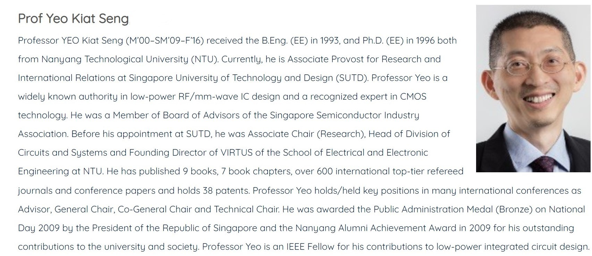 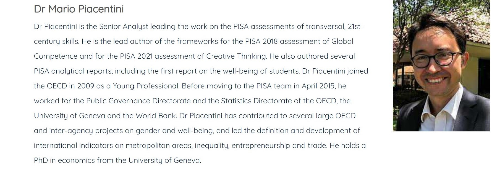 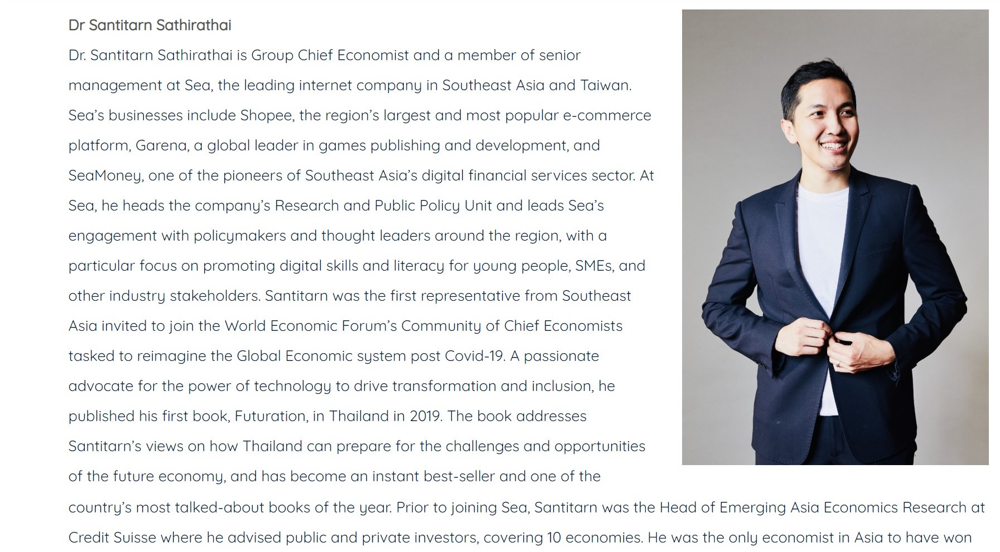 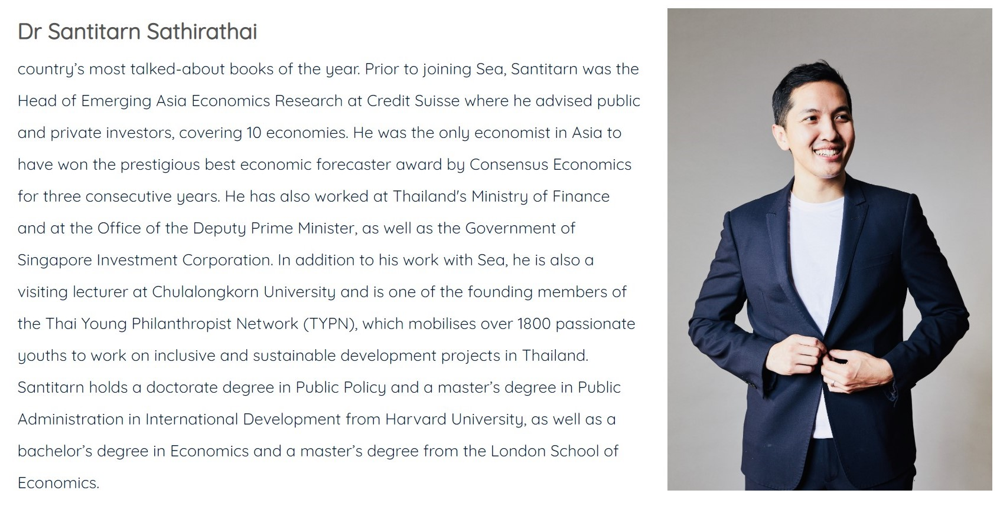
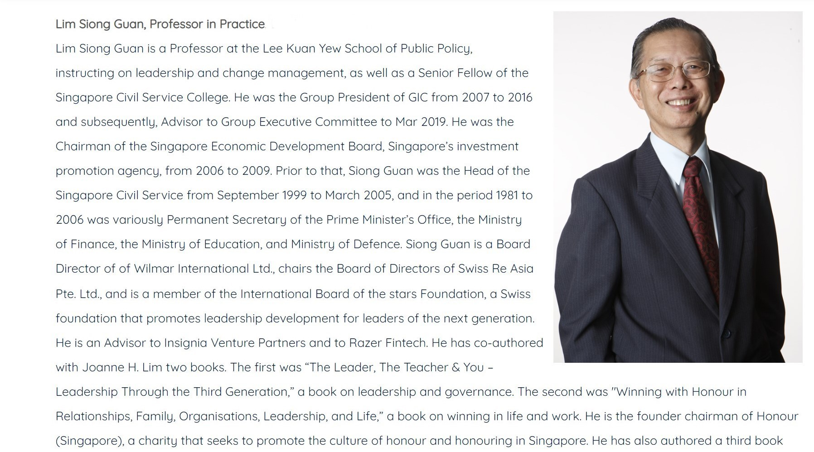
❮
❯
 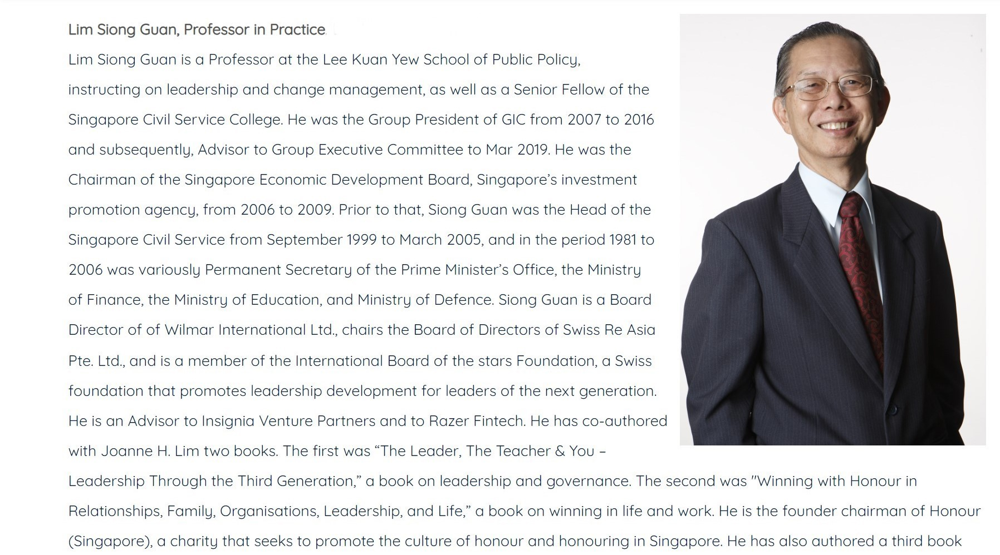
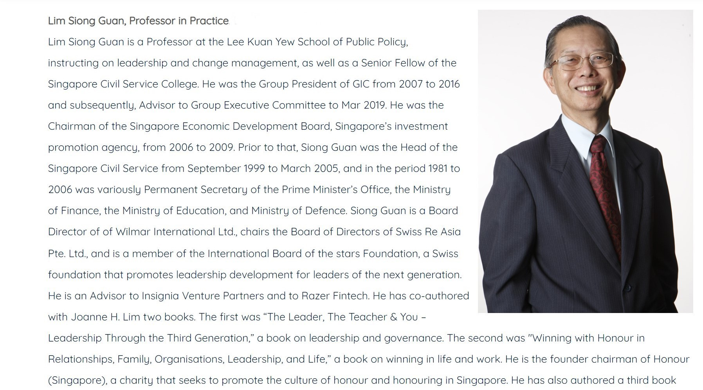
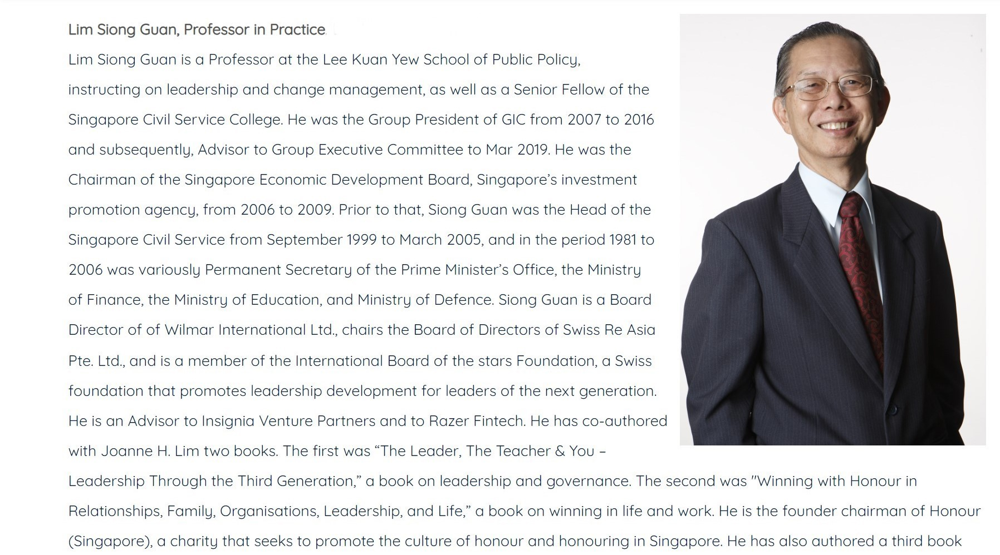
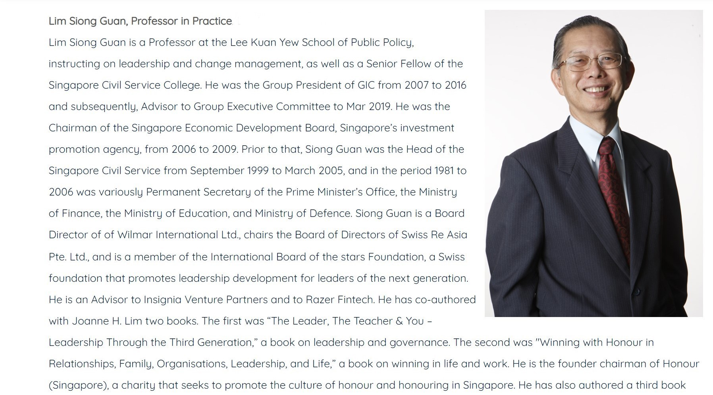
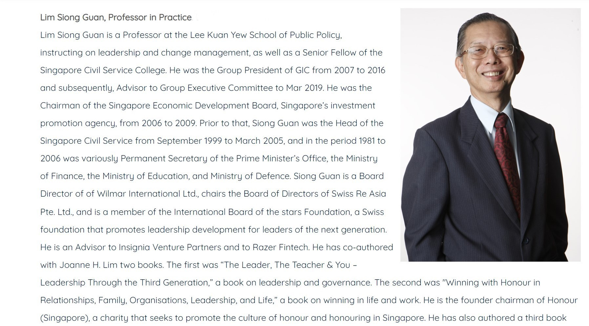
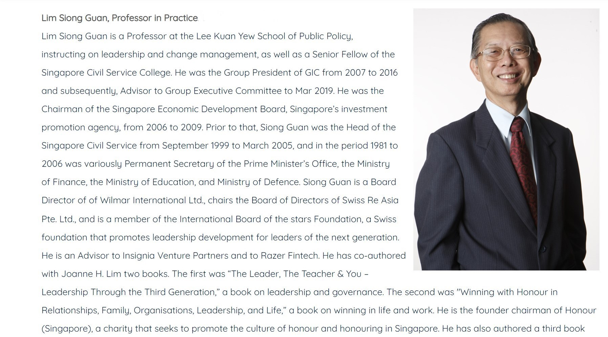